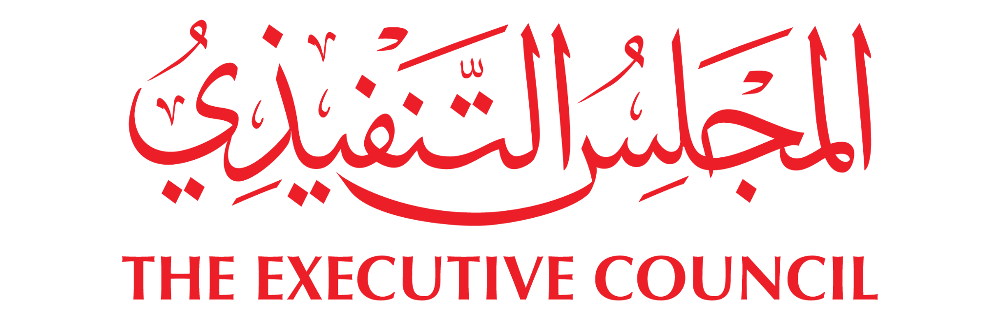

تقرير المشاريع الخاصة
حتى تاريخ 30/09/2026
الفترة عنوان للعرض؛ نطاق المشاريع تحدده عوامل التصفية أدناه.
النطاق: الكل
قائمة المشاريع
| م | المشروع | الجهة المعنية | مدير المشروع | الحالة | نسبة الإنجاز | تاريخ الانتهاء |
|---|

حتى تاريخ 30/09/2026
الفترة عنوان للعرض؛ نطاق المشاريع تحدده عوامل التصفية أدناه.
النطاق: الكل
| م | المشروع | الجهة المعنية | مدير المشروع | الحالة | نسبة الإنجاز | تاريخ الانتهاء |
|---|